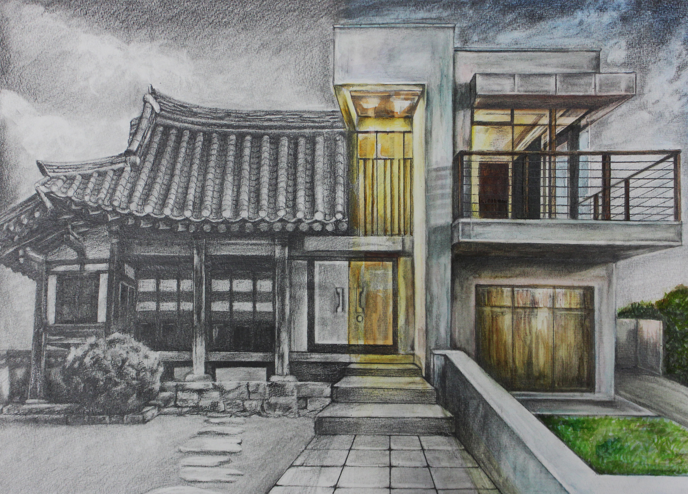

Year 2018-2020

"Muckraker", acrylic paint, cardboard, 2019, 7000px X 1929px
Scholastic Art & Writing Awards - Honorable Mention
Definition of Muckraker: investigative journalists during the Progressive Era
(1890s-1920s) who shone a light on corrupt business and government leaders as well as major social
problems like racism.

"Convergence",
"Convergence",
charcoal, watercolor paint, 2018,
18" x 24"
Scholastic Art & Writing Awards - Silver Award
"Adrenaline",
colored pencil, 2018, 12" x 12"
Scholastic Art & Writing Awards - Silver Award
Celebrating Art - National Top 25% (published) (Fall 2018)

"Inside",
charcoal, 2019, 18" x 24"
Scholastic Art & Writing Awards - Silver Award Celebrating Art - National Top 25% (published) (Fall 2019)

"Burning Memories",
charcoal, 2020, 3000px x 4000px
Celebrating Art - National Top 25% (published) (Spring 2020)

"Into the New World",
acrylic paint, 2018,
2500px X 4169px
Scholastic Art & Writing Awards - Honorable Mention